Overworld AMP · student portfolio
Ben
Gwynn-Costello
I make games in Unity with C#, write Python, model in Blender and I'm designing my own FPS, Energize. For every project I rated how confident I felt going in and coming out, so this site shows the work and what it taught me.
Rated by me at the start and end of each project. Going down usually meant I'd found out how much I didn't know yet — Asteroid, the last one, is where it all came together.
Projects
15 pieces of work, each with the real files as evidence: recordings, renders and the scripts I wrote.
Unity gamesEleven games in C#, in the order I made them. Each one reuses systems from the last.
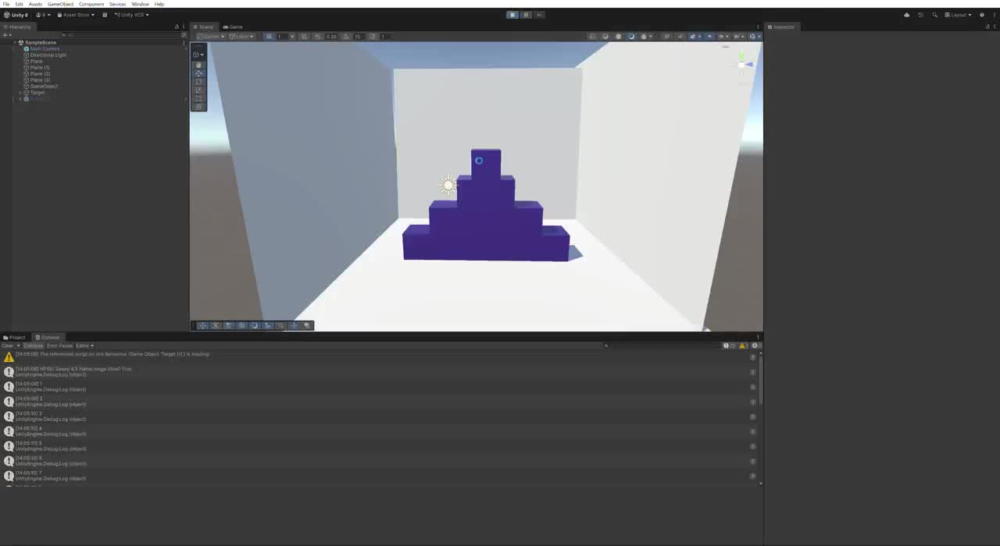
Ball Launcher
My first Unity project and my first C# — a launcher that fires balls at a wall of boxes, scored by what gets knocked down.
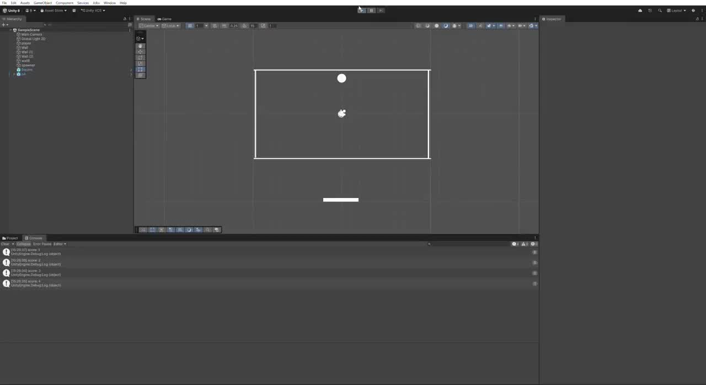
Reverse Flappy Bird
My first 2D game: a ball falls down a hole and survives by landing on platforms that rise up. Touch the top or the bottom and it's over.
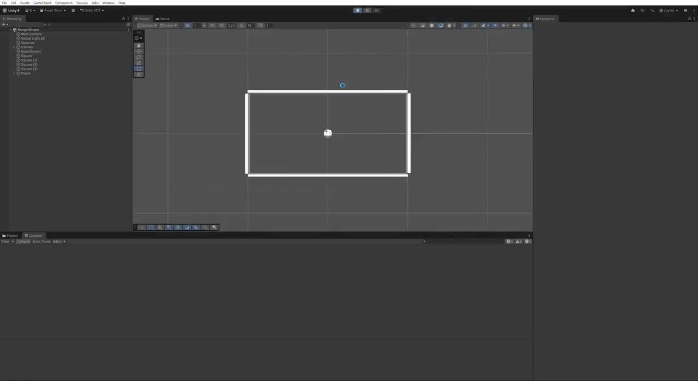
Coin Collector
Collect coins that spawn on a timer at random spots. The more you collect, the faster you move.
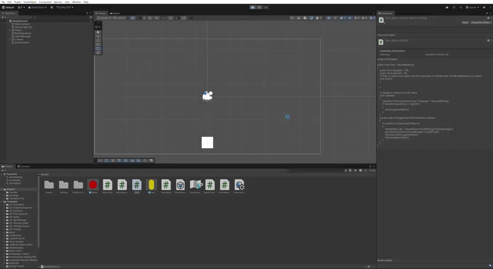
Balloon
Balloons float up, you throw darts to pop them. The more you pop the higher the score. Simple to describe, surprisingly hard to get bug-free.
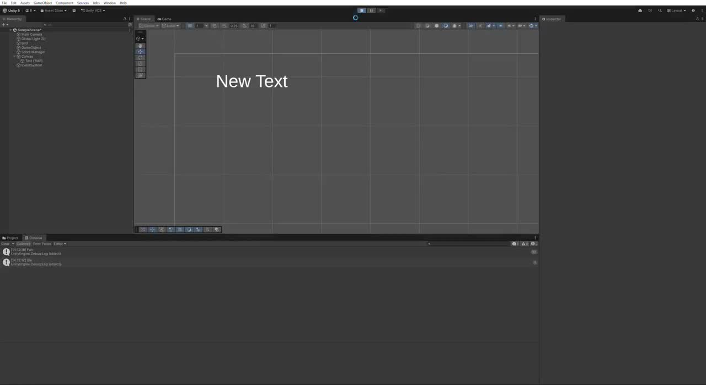
Flappy Bird
A 2D Flappy Bird remake: constant falling, a flap button, pipe pairs at random sizes and a scoring trick to count each gap once.
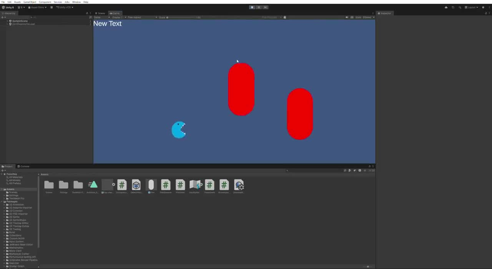
Fish Eater
Swim, eat smaller fish, grow. Fish spawn at random sizes and are colour-coded so you can tell what's safe to eat.
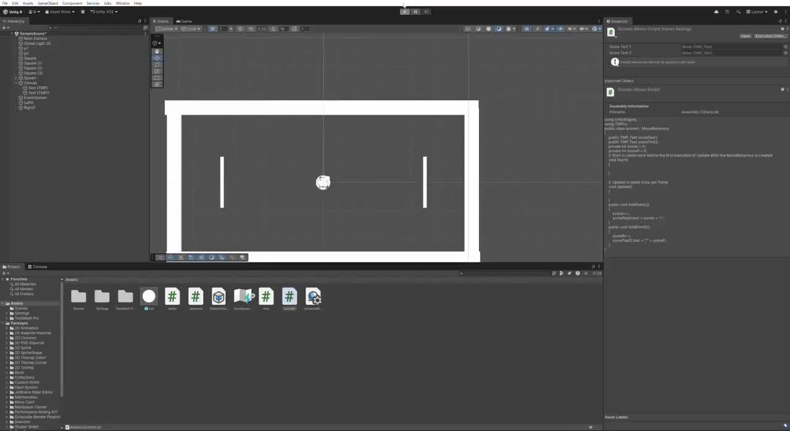
Pong
Two-player Pong with a bounce that depends on where the ball hits the paddle.
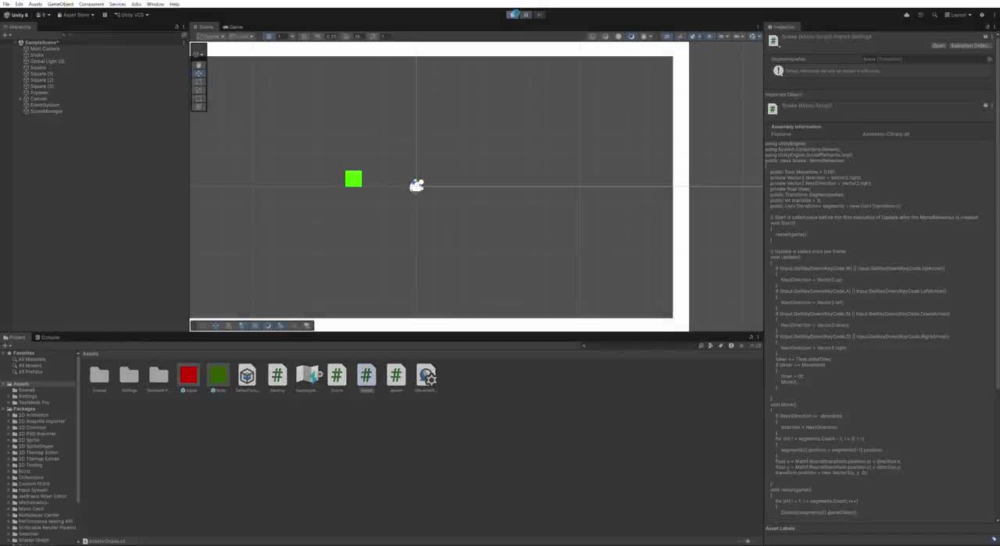
Snake
The Nokia classic with its rigid, grid-locked movement — and my first use of lists in C# to make the body follow the head.
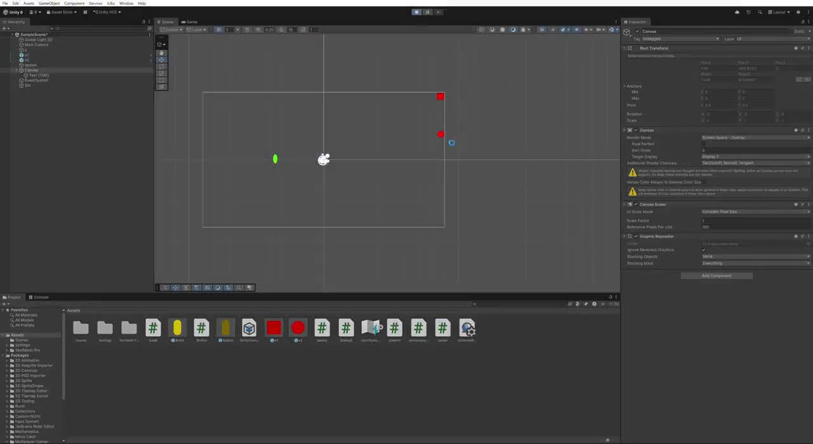
BEV — Top-Down Shooter
Bird's-eye-view shooter: enemies spawn from a random side and hunt you, elites shoot back, and you aim with the mouse. The hardest code I've written so far.
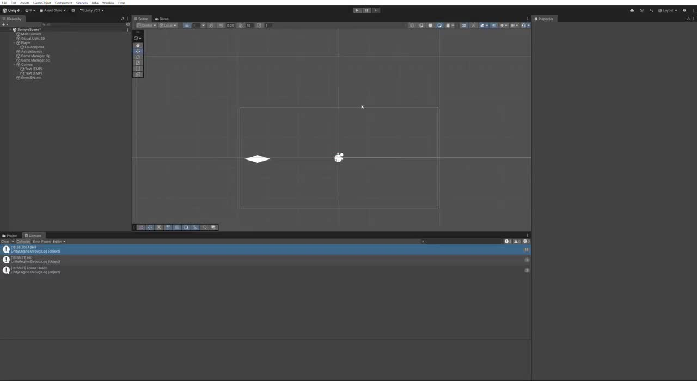
Asteroid
Dodge and shoot incoming asteroids. Five difficulty levels ramp the spawn rate as your score climbs, with a fire-rate limit so you have to time your shots.
PythonWhere I started with code.
3D modellingBlender work for Energize.
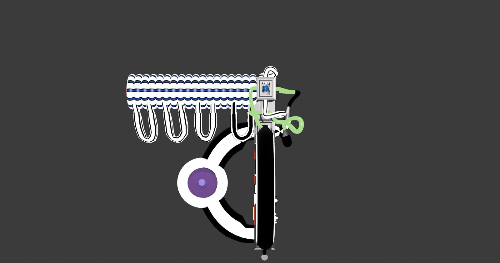
Plasma Crystal PistolMy first 3D model: the crystal-powered pistol from Energize, modelled in Blender, textured with emission and imported into Unity as a prefab. Blender · Unity8/10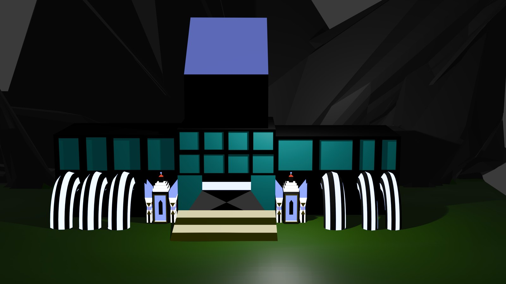
Power PlantThe one undamaged building in Energize's first level — the power plant the enemies come out to protect. BlenderAnimationBlender exercises on the 12 principles.
Game conceptThe game all of this is heading towards.

About
I'm a student at Overworld AMP. I started with Python, moved to C# in Unity with a bowling-style launcher, and have since built ten more games — each one borrowing systems from the last and adding something new: lists, collisions, spawners, difficulty curves.
Outside the games I model in Blender, animate the classic exercises, and I'm building the world for Energize, a fast, low-poly, old-school FPS. The plasma pistol on this site is its first weapon.